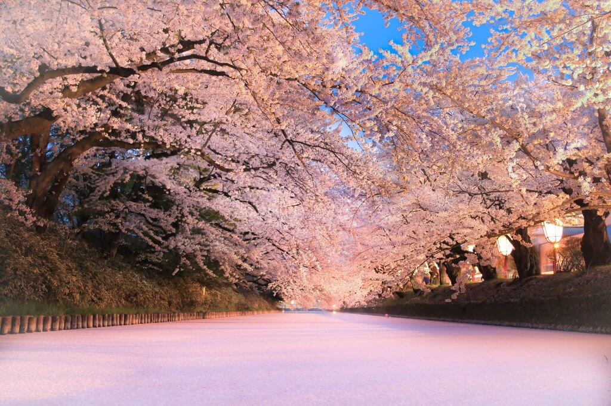
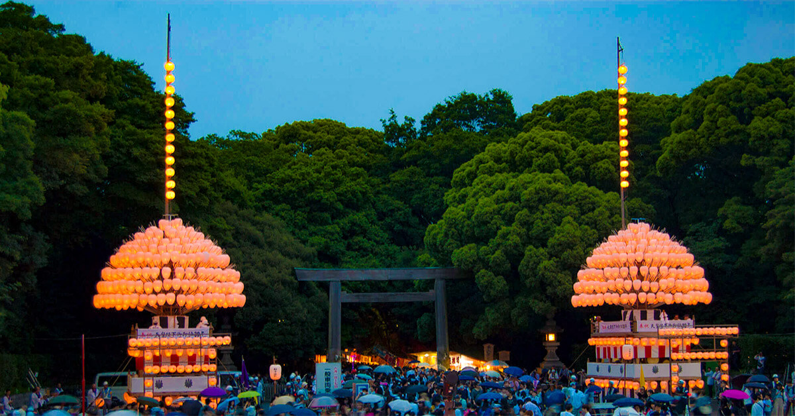
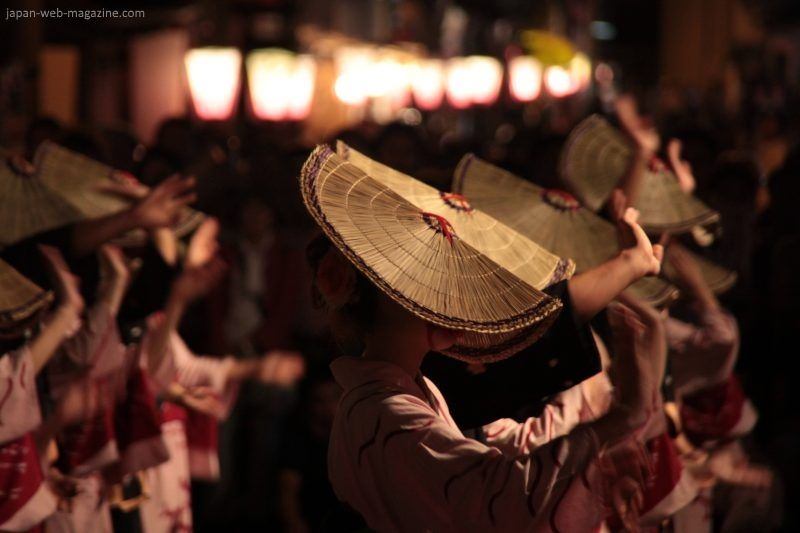

FESTIVALES DE PRIMAVERA

- Festival de los Ciruelos en Flor de Mito (Marzo)
- Festival de los Cerezos en Flor en Hirosaki (Marzo a Abril)
- Festival de Primavera de Takayama (Abril)
- Festival de Sanja (Mayo)
FESTIVALES DE VERANO

- Festival de Atsuta (Junio)
- Festival Hyakumangoku de Kanazawa(Junio)
- Festival de Gion (Julio)
- Festival del Fuego de Nachi (Julio)
- Festival de Gujo Odori (Julio a Septiembre)
- Festival de Aomori Nebuta (Agosto)
FESTIVALES DE OTOÑO

- Festival Owara Kaze no Bon (Septiembre)
- Festival de Kakunodate (Septiembre)
- Festival de Kawagoe (Octubre)>
- Festival de Kunchi (Octubre)
- Festival de Otoño de Fujiwara (Noviembre)